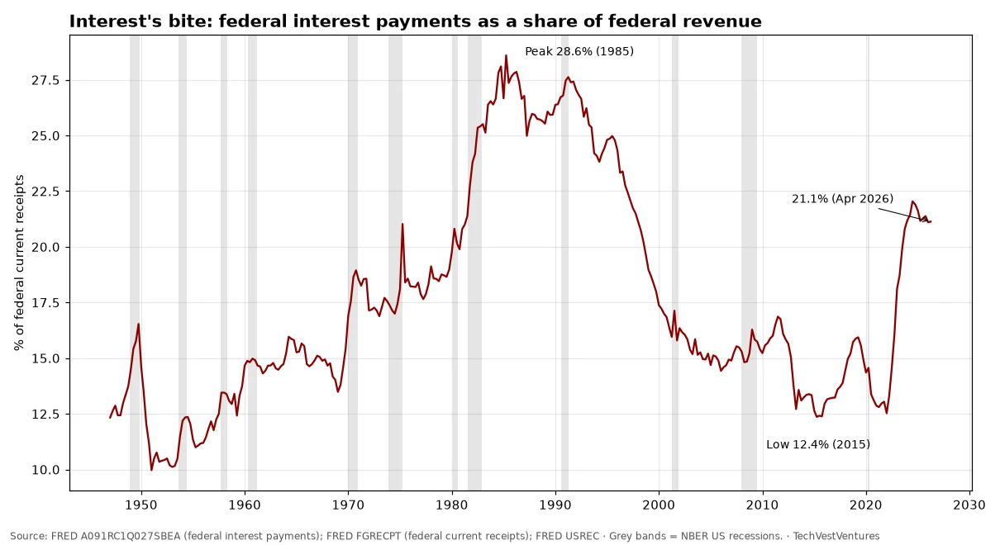
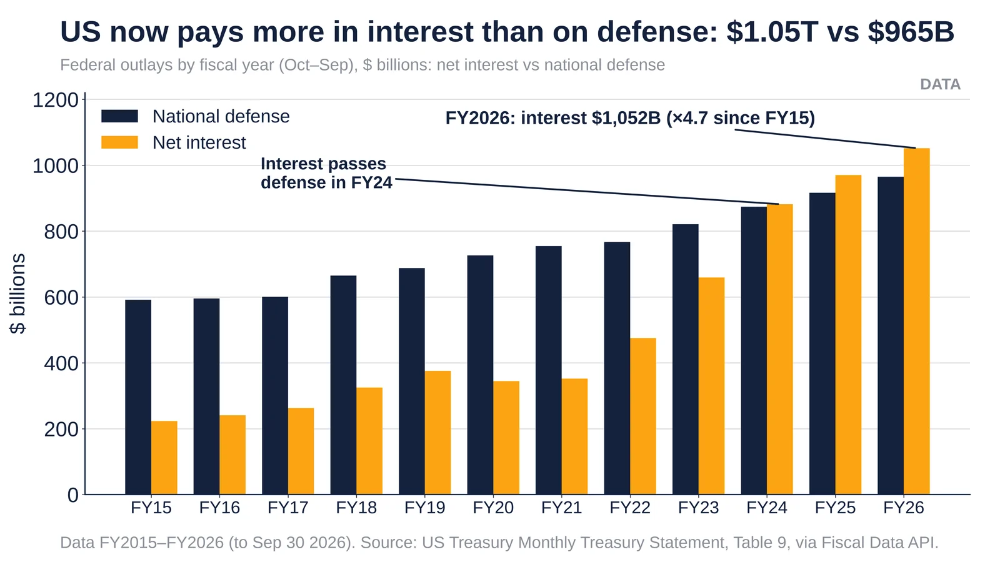
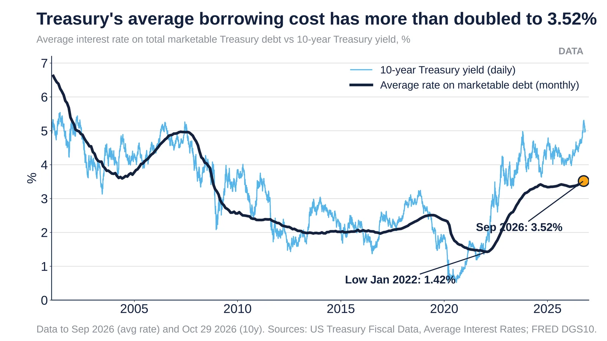

Q2. Interest Burden

Federal interest payments (BEA national accounts) divided by federal current receipts, quarterly since 1947. The ratio has nearly doubled from 12.4% in 2015 to 21.1% in Q2 2026, just below its Q3 2024 peak of 22.0%, the highest since 1997. The record was 28.6% in 1985, when 10-year yields were above 10%; the difference now is that the debt stock is far larger relative to GDP, so each further rate rise bites harder. Only one prior climb of this size (1974-1985) exists in the record, so treat any 'what comes next' pattern as a single precedent, not a rule.
Sources: FRED A091RC1Q027SBEA (federal interest payments) FRED FGRECPT (federal current receipts) FRED USREC

Net interest $1,052B vs defense $965B in FY2026; interest first exceeded defense in FY2024. Source: Treasury MTS Table 9.
- FY2026 (ended Sep 30 2026): net interest $1,051.8B vs national defense $965.2B.
- FY2024: interest $881.7B overtook defense ($874.0B) for the first time in this series.
- FY2015: interest was $223.3B, so it has risen 4.7× in 11 years while defense rose 1.6×.
Sources: Treasury Fiscal Data, Monthly Treasury Statement outlays Treasury Fiscal Data API, MTS Table 9

Average marketable Treasury rate 3.52% (Sep 2026), up from 1.42% (Jan 2022). Sources: Treasury Fiscal Data, FRED.
- Sep 2026 average rate: 3.518%. The Jan 2022 low was 1.42%.
- The 10-year yield was 4.98% on Oct 29 2026, still above the average rate, so as old debt rolls over the average keeps rising.
- Applied to $31.8T of marketable debt, every +1 pt in the average costs about $318B a year. This is arithmetic, not a forecast.
Sources: Treasury Fiscal Data, Average Interest Rates on Treasury Securities FRED series DGS10